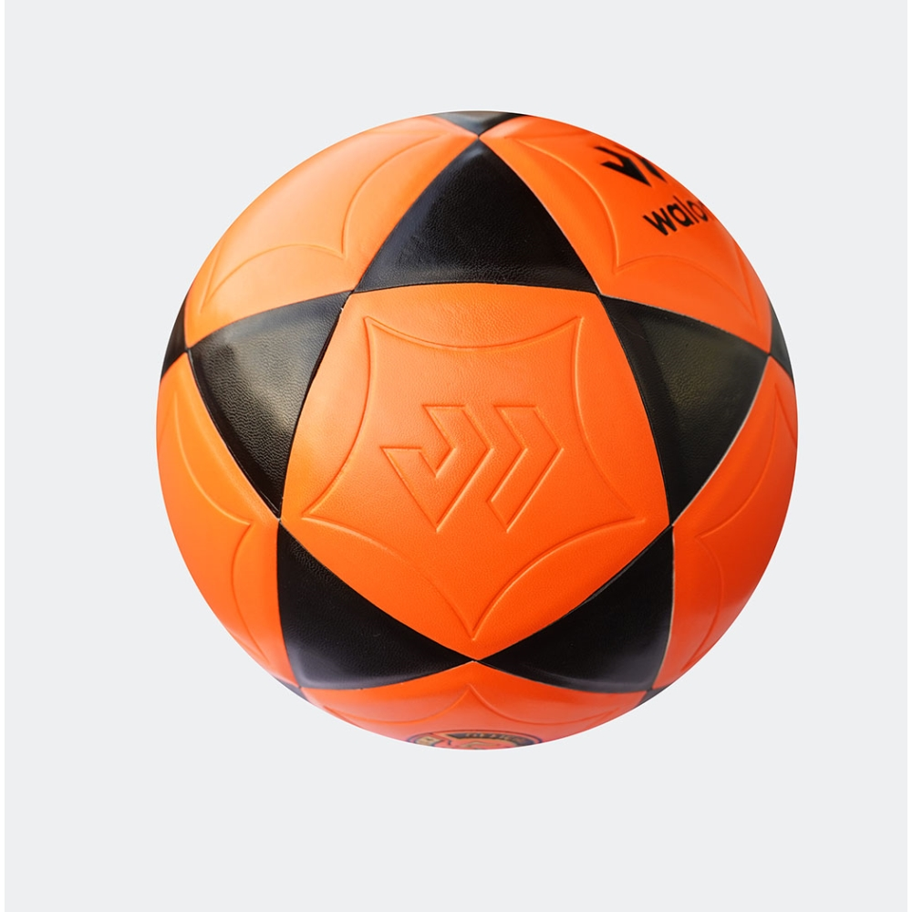

Pelota de Fútbol
Descuento
15%
Descripción
La pelota de fútbol es un artículo esencial para el deporte más popular del mundo, diseñada para cumplir con los estándares de calidad y rendimiento requeridos en el fútbol. Fabricada con materiales resistentes y duraderos, esta pelota es adecuada tanto para partidos en campos de césped como para partidos en canchas de fútbol sala. Su superficie texturizada permite un agarre y control óptimos. Es un elemento imprescindible para jugar al fútbol en cualquier nivel, desde partidos casuales hasta competencias profesionales
Precio
15.99 USD
Colores
- Negro
- Blanco
- Verde
- Amarillo
- Rojo
- Azul
